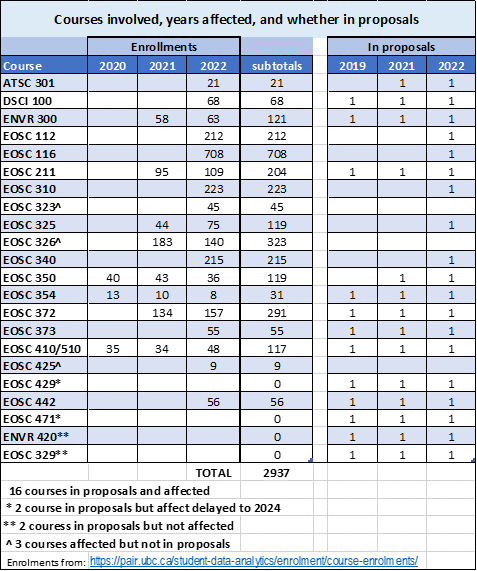
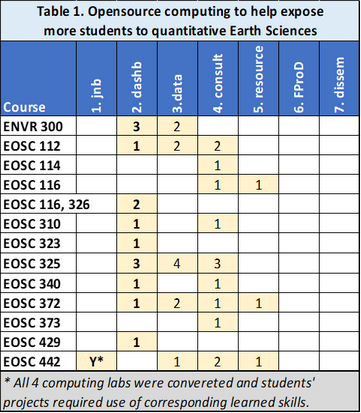
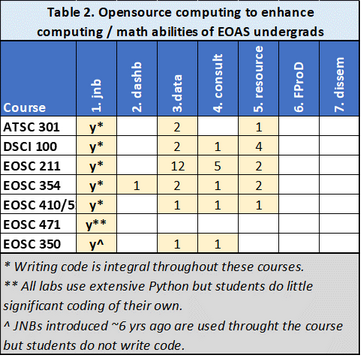
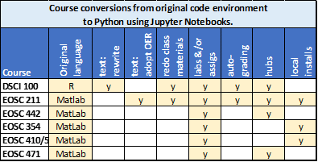

OCESE project Executive Summary
Contents
OCESE project Executive Summary#
OCESE PROJECT GOALS#
Two primary goals: Develop open-source computational tools and techniques that will …
… increase exposure to quantitative aspects of Earth Science in EOAS core and service courses,
… enhance computational & numerical capabilities of EOAS students in core EOAS courses.
Five goals in support of the top two:
Teaching and learning support for instructors and TAs.
Document resources, guidelines, tutorials,
Test affordable, sustainable cloud computing options,
Support the FoS minor in Data Science and DSCI 100
Introduce resulting materials and practices as Open Education Resources
Further details; primary goals#
1. Quantitative Earth Science for all EOAS students#
Courses aiming to enhance students’ engagement with quantitative Earth science concepts or datasets are mostly elective courses that are accessible to students from departments other than EOAS. Table 1 below summarizes courses impacted by OCESE.
2. Computational & numerical capabilities of students pursuing EOAS degrees#
Courses aiming to increase computational and numerical capabilities of EOAS students are “core” courses in EOAS degree specializations including atmospheric sciences, geophysics, and oceanography. OCESE contributed towards these courses mostly by supporting introduction of Python and Jupyter Notebooks into student learning. Tables 2 and 3 below summarize courses and the aspects that were adjusted during the OCESE project.
Further details; five supporting goals#
3. Teaching and learning support for instructors and TAs
The original project proposal anticipated carrying out facultly professional development with workshops and tutorials. Instead, during COVID, the only information sessions were short online presentations at Department meetings.
However, instructors teaching courses involved in the project received more or less extensive support from project team and teaching assistants while adjustments or resources were being developed.
Now, with the project tasks essentially completed, we anticipate that training for groups of faculty can be expected to occur between May and December 2023.
In addition, five courses have integrated some aspects of managing, automating or “semi-automating” assessments or develeopment / deployment of question sets.
ATSC301, DSCI100, EOSC211, EOSC325, EOSC340
4. Document resources, guidelines, tutorials
Some resources are targeted towards students, some for instructors or teaching assistants and some for all three. All are being accumulated at the website you are viewing now. See also Faculty Development below.
5. Cloud computing facilities
Project outcomes associated with implenting cloud computing facilities to host student learning activities are essentially “lessons learned” and documented procedures for deploying or using hubs for Jupyter notebooks or servers for dashboards.
6. Support development of a python version of DSCI 100
DSCI100 is taught in the UBC Department of Statistics, but this new Python section was first taught by Prof. L. Heagy of the Dep’t of EOAS in winter 2023. This major course adapation involved the following activities carried out between 2021 and 2023.
Adapting the R-based textbook to Python. The result is online, and the source is on GitHub.
Adapting all learning worksheets from R to Python.
Adapting teaching materials (slide decks, classroom materials, etc.) from R to Python.
Teaching the first “Python cohort” of this course.
7. Open Source Resources (OERs) and pedagogies
All dashboards, course content (such as texts) and tutorials, guidelines or other documentation emerging from the OCESE project are expected to be designated as OERs, assuming permission from stake holders is obtained.
Resources that are NOT expected to be designated as OERs include those that have solutions to student work or activities.
Summary of results: courses and other impacts#
For detailed impacts, results and evaluation information see summaries for each course under the “Course enhancements” heading (left-hand menu).
Courses affected#
The following table summarizes courses in the project proposal, those that were impacted, and corresponding enrollments (giving number of students affected).
Project contributions#
Seven types of contributions emerged from OCESE project work:
Python & Jupyter Notebooks (JNBs), either new or replacing MatLab or “R”.
Dashboards: Build and incorporate interactive apps for learning or demonstrations.
Data gathered about students’ and instructors’ experiences.
Consulting regarding content, learning, pedagogy, or logistics.
Resources: Guidelines for Python, JNBs, GitHub, dashboards, etc.
Faculty professional development: COVID caused this to be delived mainly as 1-on-1 consulting.
Dissemination: Six UBC events and 5 events beyond UBC.
Further details#
Python Jupyter Notebooks were introduced for 8 courses; 6 core EOAS courses plus EOSC442 and DSCI100.
Dashboards are used (or planned) in 10 courses, 5 each core EOAS courses and service (or elective) courses. Assignments rely on dashboards in 5 courses, others use dashboards for demonstration, class activities or as optional enrichment resources. Fifteen apps were designed and built. Eleven are live to view. Code will be made publically accessible on GitHub. Much was learned about techniques for designing, building, deploying and teaching or learning. Corresponding guidelines have been included; see “Guides” and “Tutorials” sections of the left-hand menu.
Data gathered from or about students in 6 courses for feedback on dashboards or JNBs. Other data include discussion threads (TAs, instructors & developers), midterm course feedback, and surveys about prior knowledge & needs during COVID.
Consulting, or support for EOAS faculty
The work of improving all 25 courses included consulting with corresponding instructors and teaching assistants about content, activities, and/or assessments.
Additional consulting on pedagogy, logistics, data gathering or tutorials & guidelines was carried out with instructors or teaching assistants for 16 of these 25 courses.
Owing to COVID, workshops and training sessions were not carried out, except in 1-on-1 meetings. However, 3 events were run mostly to introduce OCESE activities, and further workshops and training events will be conducted during the 6 months following the official end of funding.
Resources produced for 8 courses include teaching materials adapted for Python, and instructions on use of JNBs, installing & managing Python, GitHub, and use of dashboards & JNBs for teaching. Although developed initially for specific courses, most are generally applicable.
Faculty Professional Development: Workshops, training sessions and other group oriented support events were originally planed, however COVID caused most such support to become mainly 1-on-1 interactions between OCESE project members (including graduate students) and EOAS faculty.
Dissemination: progress reports and lessons learned have been shared at 5 UBC teaching and learning events, and at 4 conferences or workshops beyond UBC. More contributions are planned before end of 2023.
Contributions summarized by courses#
The seven types of contributions addressed our project goals 1 and 2 in targeted courses as follows:

Converting courses to Python involved the following aspects:
The seven types of project outcomes contributed in ways not related to specific coures as follows:

Finally, OCESE work has generated over 100 products to date. Of these, over 30 should become Open Education Resources, either individually or as collections.